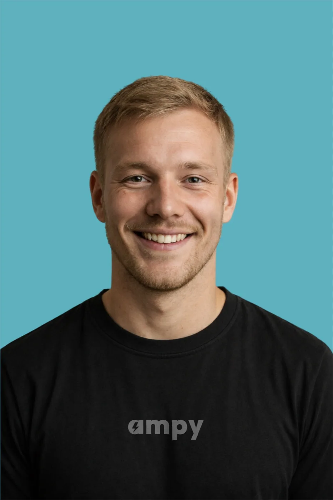

Prata med en elektriker inom 60
sekunder!
Känn dig trygg med kunnig hjälp, precis när du behöver den. Prata direkt med en erfaren elektriker som lyssnar på ditt behov och guidar dig till en säker, smidig lösning.
5,0 på Google